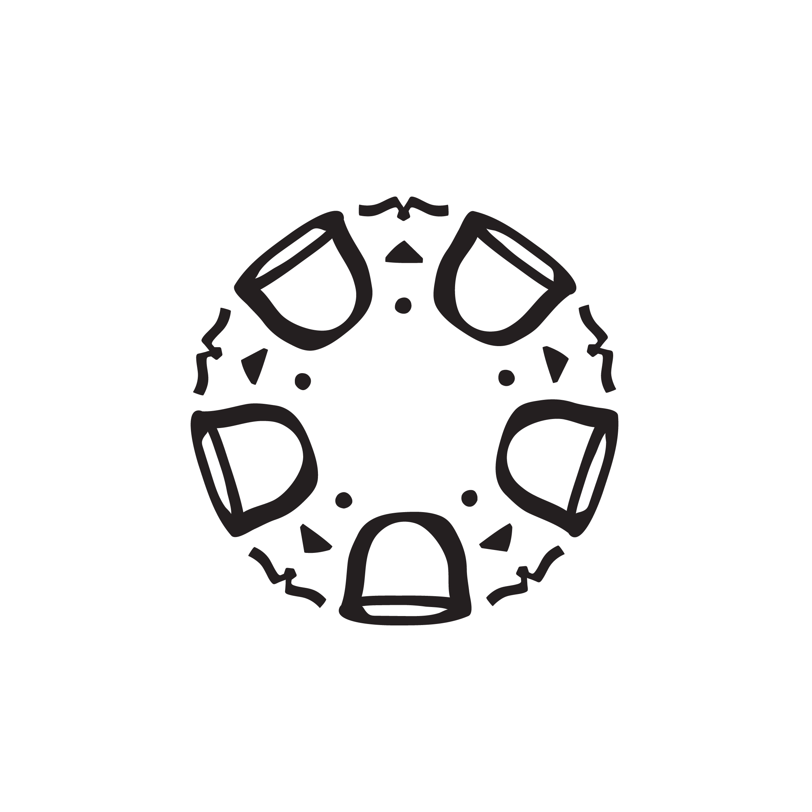

يوم التأسيس السعودي هو اليوم الذي يُعتبر فيه تأسيس المملكة العربية السعودية في 23 سبتمبر 1932.
تعكس هذه الذكرى العظيمة رحلة البلاد نحو التطور والازدهار على مر العقود.
يعبر يوم التأسيس السعودي عن وحدة الشعب السعودي واستمرارية مسيرتهم نحو المستقبل الزاهر.
فلنحتفل معًا بهذا اليوم الوطني العزيز، ولنستمر في بناء مستقبل أفضل للأجيال القادمة.
تهدف فعالية المجلس ليوم التأسيس إلى تعريف الزائر بالإرث الثقافي للدولة السعودية الأولى من خلال المحاضرات، واللقاءات الحوارية، وورش العمل، بالإضافة إلى الفعاليات المصاحبة، مثل: فنان من بلدي، ألحان من بلدي، وفنون الخط، وتاريخنا بعيوننا.
• نجد من أشكال اللقاءات الاجتماعية حضور مجلس يتواجد فيه اعداد من الرجال، بمختلف مستوياتهم الثقافية والاجتماعية والسياسية، او تلك اللقاءات التي تحرص عليها النساء بلقاء وزيارة اجتماعية وتأدية واجب او مناسبة. • يكون للحضور قيمة وفائدة متى تواجد بين الحضور من له قيمة علمية حقيقية وقيمة ووزن ثقافي، بثقل معرفة وخبرة وتجارب وكاريزما تفرض حضورها، بما يقدمونه من آراء وفائدة ومعرفة وخبرات صحيحة في مجالهم، دون تفلسف واستعراض لكل المجالات، واستعراض عضلات لمعلومة قرأها في تويتر! أو سمعها دون أن يفهم خلفية وشمولية المعلومة!. • العالم والمثقف الحقيقي من يتكلم بما يعرف ويلتزم الصمت في جهله لأمور، ولا يرفع صوته في حضور أهل الخبرة والمعرفة. • كم من فقاعات تظن أنها مثقفة وهي كذلك، ولكن بثقافة حفظ ومزيفة وفارغة ولا أثر لها!. • وكم من أولئك الذين يظنون أن رفع الصوت للسيطرة على المكان والحضور يجعل لهم الانصات والالتفات والاهتمام!. • وكم من أشكال تظن أن لها الحضور والكاريزما بممارسات واستعراضات والإدلاء بدلوهم في كل موضوع وحديث رغبة في توجه الوجوه والأنظار والحواس إليهم!. • المجالس واللقاءات الادبية والثقافية والندوات وغيرها من فعاليات تعقد وتنظم؛ إن افتقرت للفائدة والمعلومة والاضافة وكانت لقاءات لأجل الوصول لبعض الاسماء المتواجدة لمنفعة يبتغيها! أو الوصول ليكون متواجدا وحاضرا في لقطة وصورة جماعية تنشر في وسائل الإعلام المختلفة طلبا لشهرة وغاية في نفسه! فإن مثل هذه المجالس لا جدوى منها إن غلب عليها الاستعراض والمجاملات والنفاق الاجتماعي، وهو ما ينطبق على اللقاءات والبرامج الحوارية!.